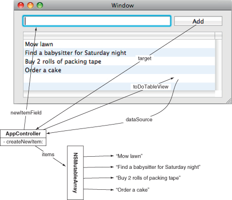
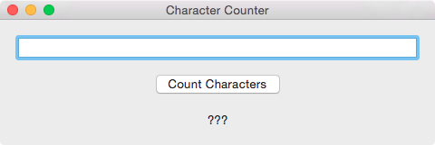
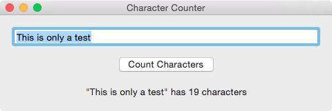

(For further information, see Chapter 5 (4th ed.) beginning from the “Start the SpeakLine Example” section, and proceeding up to the “For the More Curious: Setting the Target Programmatically” section.)
Create a Cocoa application in Xcode named “SpeakLine”, similarly to how you created your FractionCalculator application. The examples below assume that you have not used storyboards in your project. You could use the stub project from lab 8, or follow the directions linked from the assignments page that change a storyboard-based project into one that does not use storyboards. Alternatively, you could use storyboards, in which case just put the code and interface builder outlets into the view controller that is created for you, instead of your AppDelegate.
In the Interface Builder set up a main window containing an NSTextField in which to enter the text of a sentence, and two buttons, “Stop” and “Speak”.
You have seen in the screencasts for building the Timer, and in lectures, the connecting of controls in the Interface Builder to code. If you open the assistant editor in Xcode, you can show the Interface Builder and your Swift source file AppDelegate.swift at the same time.
Control-click and drag from your “Stop” button into your SpeakLine AppDelegate window so that the tip that appears says “Insert Outlet or Action”. When you release you can choose to connect the “Action” and in the “Name” enter “stopIt”. Do the same for your “Speak” button to create an action named “sayIt”.
Using whatever mechanism suits you, create an IBOutlet for your NSTextField named “textField”.
When your application runs, the NSTextField should ideally be ready to accept keyboard input, rather than the user needing to click on it first. If you control-click the window icon in the Interface Builder, you will see its Connection panel. From there you can drag from the initialFirstResponder to your NSTextField.
To make the speech synthesiser work, you will need to create an instance of an NSSpeechSynthesizer. In this work, call the var in your application delegate “speechSynth”. In the constructor of your application delegate, initialise speechSynth using an appropriate NSSpeechSynthesizer constructor. (You may wish to look up the API documentation.)
The stopIt action just needs to call the stopSpeaking method of your speechSynth. The speakIt action can pass the string fetched from textField to the startSpeakingString method of speakIt. Note that you should first check that this string is not empty, however.
(This material is loosely based on Chapter 6 (4th & 5th ed.), Hillegass and Preble)
You will experiment with delegation by changing your SpeakLine application delegate to conform to the NSSpeechSynthesizerDelegate protocol.
Recall that the Timer screencast and lecture on building the MVC version of the timer also changed the application delegate to become a delegate of the TimerModel.
Modify your SpeakLine AppDelegate to respond to the didFinishSpeaking part of the NSSpeechSynthesizerDelegate protocol. Start by logging to the console when the speech synthesiser finishes. After that is working, change your code so that the Speak button is disabled whenever the speech synthesiser is speaking, and automatically becomes enabled again when the speech synthesiser finishes speaking.
Just do as many of these as fit into your lab time.
(This is heavily based on the first challenge from Chapter 6 of Hillegass and Preble (4th ed.))
You should create an application that only has one window. Ensure that the window's delegate is set to a class for which you can write code.
When your application is running, and the window is resized, you should ensure that the height of the window is always twice its width.
You are likely to need to implement the delegate method windowWillResize(sender:NSWindow, frameSize:NSSize).
The following code demonstrates one way to create an NSSize that has a width of 200 points and a height of 100 points:
01: 02: 03: 04: 05: 06: 07: 08: 09: 10:
class AppDelegate : NSObject, NSApplicationDelegate { @IBOutlet weak var window: NSWindow! func applicationDidFinishLaunching(aNotification: NSNotification) { // Insert code here to initialize your application let mySize = NSSize(width: 200.0, height: 100.0) print("mySize is \(mySize.width) wide and \(mySize.height)") } }
The Interface Builder's Size Inspector can be used to specify the initial size of the window.
(This is the second challenge from Chapter 6 of Hillegass and Preble (4th ed.))
"Make a to-do list application. The user will type tasks into the text field. When the user clicks the Add button, you will add the string to a mutable array, and the new task will appear at the end of the list.

When a new string is added to the array, you will need to send the message reloadData to the table view before you will see it.
It is even better if you can make the table view editable. (Hint: NSMutableArray has a method replaceObjectAtIndex:withObject:)”
(This is based on the challenge from the end of Chapter 5 (4th ed.) in Hillegass and Preble’s book.)
You should create an application that presents something similar to the user interface shown below. At first the window should appear follows.
After a string is entered into the text field, and the user clicks the "Count Characters" button, the "???" label should change to include the number of characters in the string, as shown below.

It is important to know how to use the Cocoa classes in your application. For this exercise, you should recognise that the NSTextField class has the following field (Swift typically handles NSString / String conversion for you):
stringValue:NSString
Each major Swift version seems to have a different way of finding the length of a String. In Swift 3, to find the length of some String variable s, use the construct s.characters.count.
There are many ways that you can interpolate a string value to update the text shown in the above window. Your code should only need two outlets and one action to work.